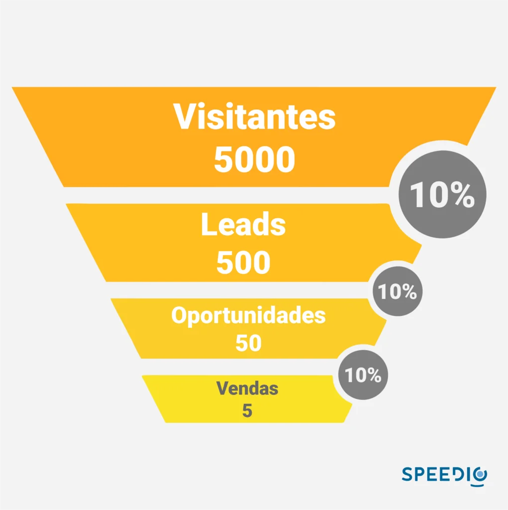
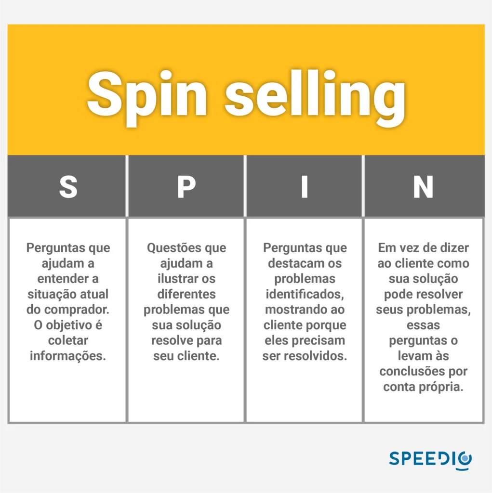

Artigos da Categoria
O que é prospecção de clientes no B2B?
Neste post você verá
A prospecção de clientes é onde seu processo comercial tem início, tendo a prospecção ativa como a forma mais eficiente no mercado B2B.
Como funciona a prospecção de clientes?
É possível realizar a estratégia de prospecção de um potencial cliente de duas formas: através do Inbound marketing ou do outbound, também conhecido como prospecção ativa.
O processo de prospecção é fundamental para sua empresa conquistar novos clientes, afinal, ela não pode sobreviver apenas por indicações de terceiros.
No mercado B2B a concorrência é grande. Chamar a atenção do lead é uma tarefa que exige muita estratégia e competência de todos os envolvidos na equipe comercial. Uma forma de superar a concorrência é agir diferente. Ofereça soluções para as dores que o mercado possui, ao invés de produtos ou serviços.
É necessário que haja pesquisa, a venda é realizada de uma forma que beneficie os dois lados, afinal, de que adianta empurrar seu produto para uma empresa que não irá utilizar? No fim, isso pode gerar um feedback negativo e com as redes sociais a todo vapor, qualquer comentário negativo é um problema.
O que é prospecção ativa?
A prospecção ativa de leads ocorre quando sua empresa entra em contato direto com quem ele vê que possui interesse no produto ou serviço que está sendo vendido. Esses potenciais clientes entram em um processo de vendas mais direto, mas não muito diferente do inbound, já que a qualificação de leads precisa ocorrer.
Uma das principais características da prospecção ativa é buscar clientes que façam parte do ICP da empresa, ou seja, aqueles leads que ao entrar em contato, possuem muito mais chances de fechar uma compra. Essa é uma forma eficiente de prospectar clientes e que gera resultados positivos muito mais rápido.
Na prospecção ativa sua empresa não fica dependente de indicações ou de leads de má qualidade. Esses acabam caindo na rede no inbound e atravessam o funil de vendas, o que pode gerar muita demanda para o time de SDR, que vai realizar a qualificação desses leads. Um bom exemplo que podemos dar é na imagem a seguir:

Como fazer prospecção ativa?
Sua empresa pode realizar uma estratégia eficiente de prospecção ativa, mas é essencial que ela consiga leads de qualidade que façam parte do perfil de cliente ideal, como dissemos anteriormente. Mas, onde conseguir leads de qualidade?
Com uma ferramenta de geração de leads B2B, como da Protocolo Hidra, sua empresa terá muito mais eficiência na prospecção e muito mais chance de fechar uma compra. E não se engane, outras empresas, incluindo seu concorrente direto, utilizam ferramentas assim.
Essas ferramentas trazem muitas informações a respeito do lead, o que te prepara bem para estudá-los. Esse preparo é muito importante para a condução das reuniões, onde você demonstra conhecimento pleno sobre as dores do lead e oferece a solução do problema, com muito mais autoridade.
Outra técnica muito utilizada durante a prospecção ativa é o follow-up. Nem sempre é possível fechar uma venda logo no primeiro contato, as vezes (na maior parte dos casos, verdade) é necessário mais de um contato para a venda ser concluída.
O vendedor utiliza horários estratégicos para realizar novas ligações e realizar outras tentativas. Isso exige muita organização, reserve um horário para realizar apenas follow-ups, para atrapalhar o fluxo de vendas.
A organização se junta a outra dica que trazemos para você: defina metas e objetivos para a empresa. Elas podem ser semanais, mensais, trimestrais ou até mesmo semestrais. o importante tê-las bem definidas e mais importante, que sejam alcançáveis.
Definir ORK para todo o departamento de vendas é uma ótima maneira de realizar o crescimento da empresa como todo e com certeza vai interferir positivamente nos resultados.
Tipos de prospecção ativa
Cold email
Enviar cold mails é uma das técnicas mais tradicionais de realizar prospecção de leads. Você envia um e-mail frio para alguém com o qual sua empresa nunca entrou em contato. Portanto, é necessário respeitar as boas práticas de envio de e-mail, além de tomar cuidado com o conteúdo.
A lista de contatos precisa ser muito bem segmentada. Esqueça comprar lista de mailing, o ideal é utilizar uma ferramenta de geração de leads B2B, como dissemos anteriormente. O texto de um cold mail precisa ser personalizado, tanto no visual, quanto no texto.
Lembre-se de que a caixa de entrada do lead está cheia, o seu e-mail precisa chamar atenção de forma positiva para que ele queira abri-lo. Quanto à mensagem, escreva como se fosse uma conversa, a decisão de compra do seu lead depende dessa mensagem!
Por último, mas não menos importante, inclua uma CTA que converta. Ela precisa ser pensada e estrategicamente colocada no corpo do e-mail e que converse com todo o conteúdo produzido.
Cold calling 2.0
Como conseguir ter mais resultados efetuando ligações? Na cold call, o vendedor entra em contato com um possível cliente que nunca ouviu falar da sua empresa, como no cold mail. No caso da cold call 2.0, o vendedor não sai tão às escuras e entra em contato com possíveis clientes, ele tem ajuda de outras frentes, como o cold mail.
Como isso é feito? Muito simples! Você só vai entrar em contato com quem sinalizou positivamente o interesse em seu produto ou serviço. Dessa forma, a conversa acaba sendo mais direta e as chances de conversão aumentam muito mais.
Uma forma de realizar a cold call 2.0 com excelência é ter um especialista responsável por cada etapa do processo de vendas em sua respectiva área. Nada de acumular funções durante o processo, isso só vai atrapalhar tudo.
para sua empresa
Qualifique o lead com SPIN Selling
Essa metodologia foi criada pelo inglês Neil Rackham e segue dando bons resultados desde a sua criação. A técnica é voltada para vendas mais complexas que acabam se tornando mais consultivas. Estima-se que o SPIN selling melhore em até 17% os resultados nas vendas.
Ela possui quatro etapas, onde a primeira está relacionada às perguntas que serão feitas para o seu lead. Procure não gastar cartucho com perguntas bobas, busque questões que ajude você a entender a situação do possível cliente e colete o máximo de informações que conseguir. Quanto mais assertivo você for nas perguntas, mais dados de qualidade serão coletados.
As perguntas precisam te ajudar a ilustrar os diferentes problemas que a sua solução pode resolver. Se o seu produto foi desenvolvido exclusivamente para o “problema x” foque em perguntas relacionadas a isso e faça o prospect entender que você é a solução que ele tanto busca.
Essa parte pode ser parecida com a anterior, mas não é. Suas perguntas precisam destacar os problemas que o prospec possui. Além dele entender seu produto resolve o problema dele, é preciso fazê-lo entender que é muito importante resolvê-lo.
Você não pode deixá-lo pensar que é possível empurrar esse problema com a barriga para sempre. O problema precisa ser resolvido!
Agora o pulo do gato! O mais importante sobre essas perguntas é deixar que o prospect chegue a conclusão de que precisa do seu produto ou serviço por conta própria. As perguntas precisam fazer ele pensar e enxergar você como a solução e não dizer a ele, de forma direta, que você resolve.

Utilize a tecnologia para prospectar
Como dissemos anteriormente, sua empresa vai precisar de uma ferramenta de geração de leads B2B para conseguir prospectar com qualidade. A Protocolo Hidra consegue te ajudar nisso, já que somos a plataforma número 1 do Brasil na categoria, eleitos pela B2B Stack. Mas você vai precisar de mais reforços se quiser bater de frente com o mercado.
Tenha uma plataforma de CRM
Falamos anteriormente que a organização é um passo fundamental durante o processo de prospecção de clientes, incluindo as técnicas de follow-up. Com uma plataforma de CRM, você terá todo seu processo organizado, deixando o fluxo mais otimizado.
Automação de e-mail
O cold mail precisa estar personalizado e as bases bem segmentadas, correto? mas como fazer sem uma boa ferramenta de automação? O processo também ficará muito mais rápido e organizado com uma ferramenta assim. Onde é possível analisar as métricas de quantas pessoas abriram ou clicaram em seu CTA.
Ferramenta de big data
Gerar leads não é uma tarefa simples. A Protocolo Hidra tem orgulho de ser a melhor e trabalhou duro para chegar nesse ponto. Nossa ferramenta possui os melhores dados porque tem um banco de dados atualizado e que respeita a LGPD.
Nossa plataforma B2B possui um filtro onde é possível validar os contatos antes que você os pegue para iniciar sua prospecção. O índice de assertividade dos contatos gerados pela Protocolo Hidra são muito altos e não para menos que somos os melhores.
Não existe segredo, para realizar prospecção ativa com resultados, seus leads precisam ter qualidade.
Qualquer empresa pode fazer prospecção ativa?
De empresas de grande porte, a empresas menores, todos podem (e devem) fazer prospecção ativa. Tanto a empresa grande quanto a menor, ambas vão procurar fazer negócios com outras empresas que façam parte de seus respectivos ICPs.
Não é porque a sua empresa é pequena é que ela não deva ir atrás de outras empresas para conseguir negociar. Com uma ferramenta de geração de leads, por exemplo, você pode filtrar contatos de empresas próximas. Imagine descobrir 10 ótimas oportunidades de negócio que até então eram desconhecidas.
O mesmo vale para empresas de grande porte com apelo nacional. Sua sede está em São Paulo, mas você descobriu uma gama de possibilidades de negócio na Bahia. A prospecção ativa é democrática, ela permite que todos consigam realizar seus negócios, você só precisa estar preparado para a briga selvagem do mercado B2B. Preparado?